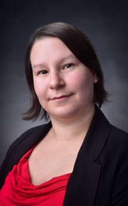

About Me
Welcome Everyone! It's so nice of you to visit my portfolio page. Let me tell you a bit about myself. My name is Amanda and I live in the busy city of Toronto with my sweet ginger cat Ivanhoe. Originally from Montreal, I've spent the last ten years living in various cities across Canada (Saskatoon, Vancouver, Fredericton and Toronto), and in Geneva, Switzerland. I speak both English and French and can understand Portuguese and Italian.
I work as a Digital Archives Specialist with a not-for-profit here in the city, which keeps me quite busy. I also have a background working with traditional Archives (paper based) and Records Management. In my capacity as a Digital Archives Specialist, some of duties involve managing databases, working with open source products, and managing a variety of WordPress sites.
I became interested in coding during my masters degree, when we had to complete a standard html/css webpage. I dabbled here and there and took on many volunteer opportunites to manageing different associations' websites. but it wasn't until I began working as a Digital Archives Specialist that I realized I needed to improve my skills. So here I am going through the BootCamp course!
In my spare time I enjoy listening to podcasts, my favourite non-fictional podcasts being No Such Thing As A Fish and My Dad Wrote A Porno and my favourite audio fiction is The Amelia Project. I enjoy British television QI being one of my go to viewing choices. I also play floor hockey and enjoy boxing. I play the French Horn in the Counterpoint Community Orchestra, North America's first LGBTQ+ friendly orchestra.